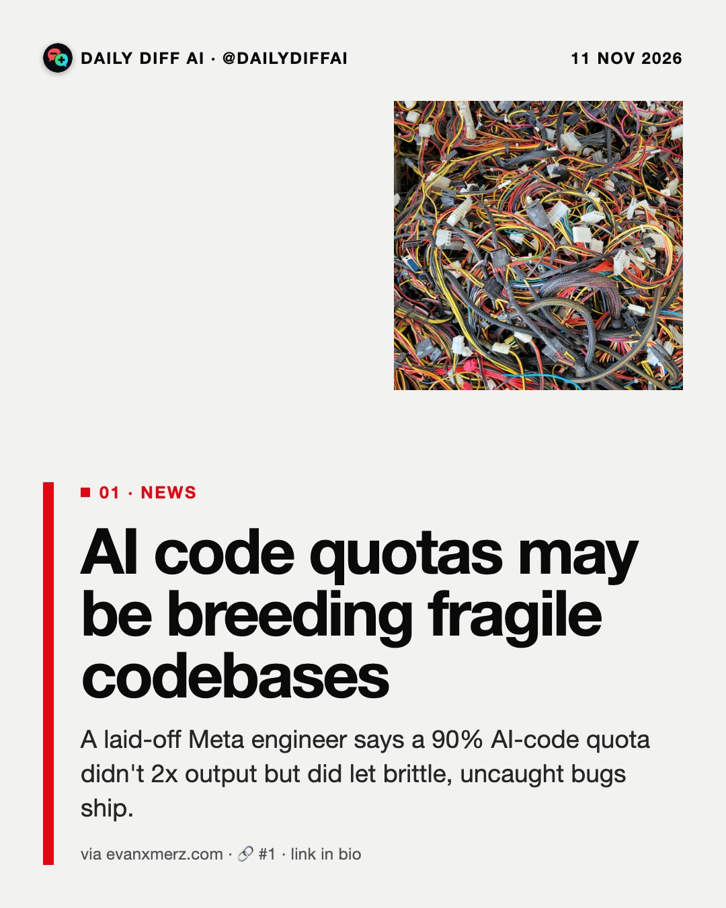
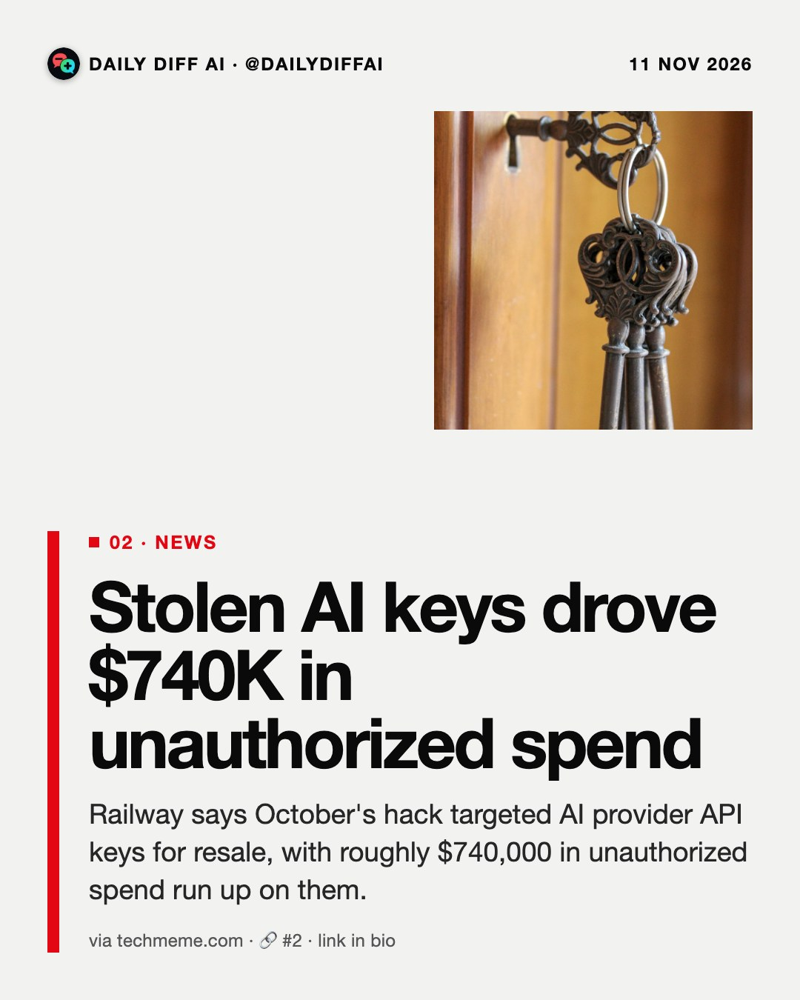
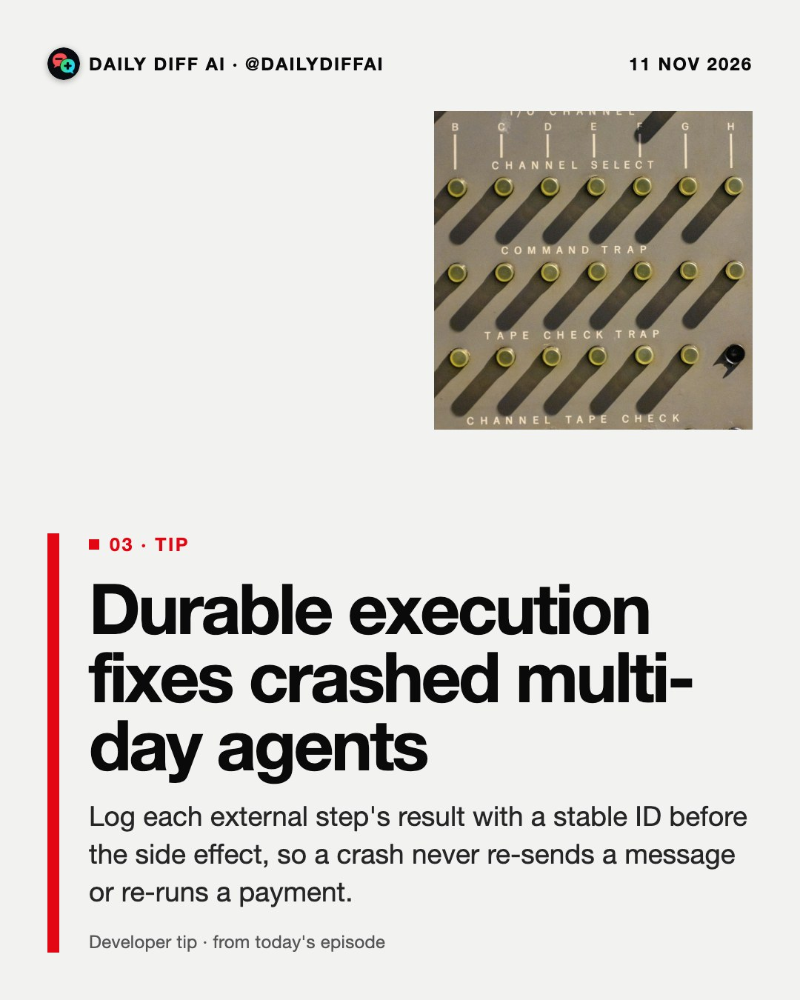
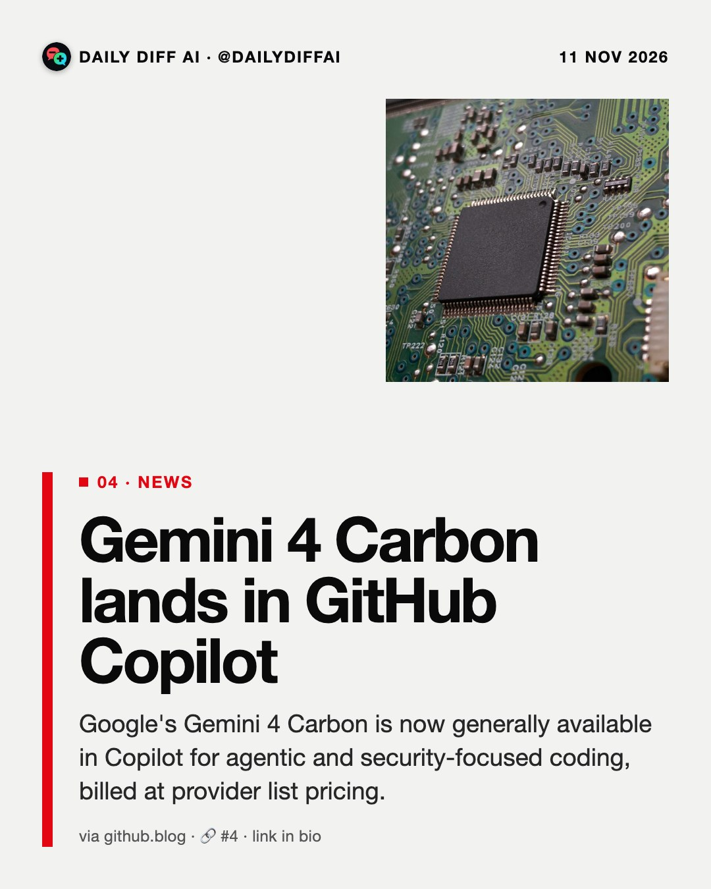
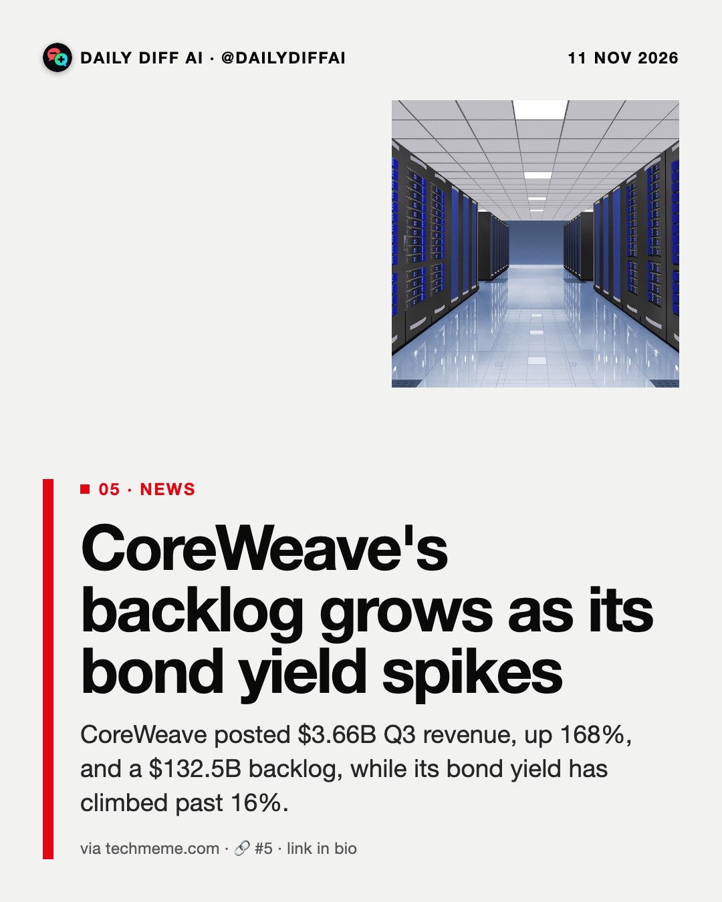
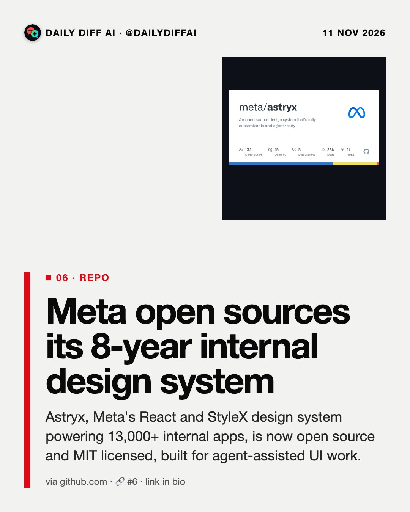
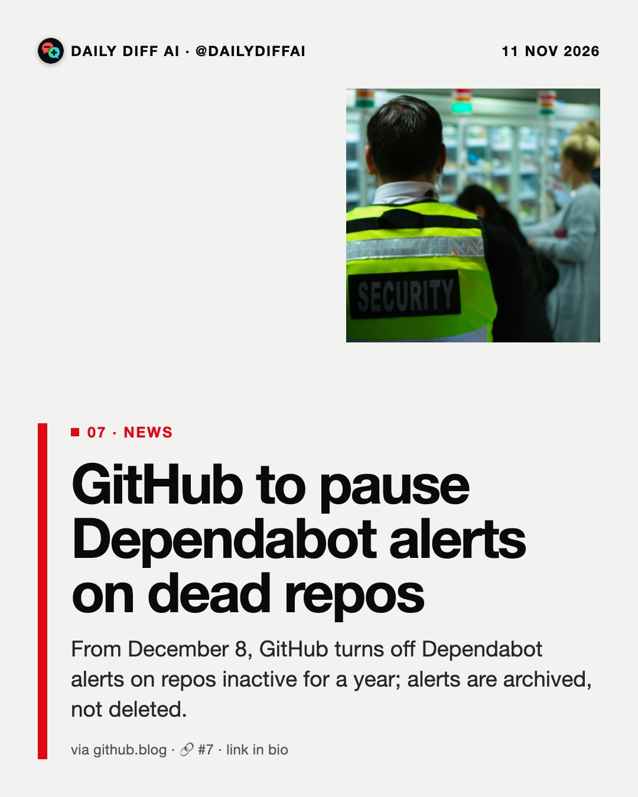

Daily Diff AI

AI code quotas may be breeding fragile codebases
A laid-off Meta engineer says a 90% AI-code quota didn't 2x output but did let brittle, uncaught bugs ship.
Read on evanxmerz.com →
Stolen AI keys drove $740K in unauthorized spend
Railway says October's hack targeted AI provider API keys for resale, with roughly $740,000 in unauthorized spend run up on them.
Read on techmeme.com →
Durable execution fixes crashed multi-day agents
Log each external step's result with a stable ID before the side effect, so a crash never re-sends a message or re-runs a payment.

Gemini 4 Carbon lands in GitHub Copilot
Google's Gemini 4 Carbon is now generally available in Copilot for agentic and security-focused coding, billed at provider list pricing.
Read on github.blog →
CoreWeave's backlog grows as its bond yield spikes
CoreWeave posted $3.66B Q3 revenue, up 168%, and a $132.5B backlog, while its bond yield has climbed past 16%.
Read on techmeme.com →
Meta open sources its 8-year internal design system
Astryx, Meta's React and StyleX design system powering 13,000+ internal apps, is now open source and MIT licensed, built for agent-assisted UI work.
Read on github.com →
GitHub to pause Dependabot alerts on dead repos
From December 8, GitHub turns off Dependabot alerts on repos inactive for a year; alerts are archived, not deleted.
Read on github.blog →Nvidia plans $10B bet on Anthropic's IPO
Nvidia's filing shows plans to invest roughly $10B in Anthropic post-IPO, about 10% of its expected new November fundraise.
Read on techmeme.com →
Fireworks breach confirmed to have hit Notion data
The October Fireworks AI breach, which exposed customer datasets and billing info, is now confirmed to have affected Notion's data on the platform.
Read on notion.com →